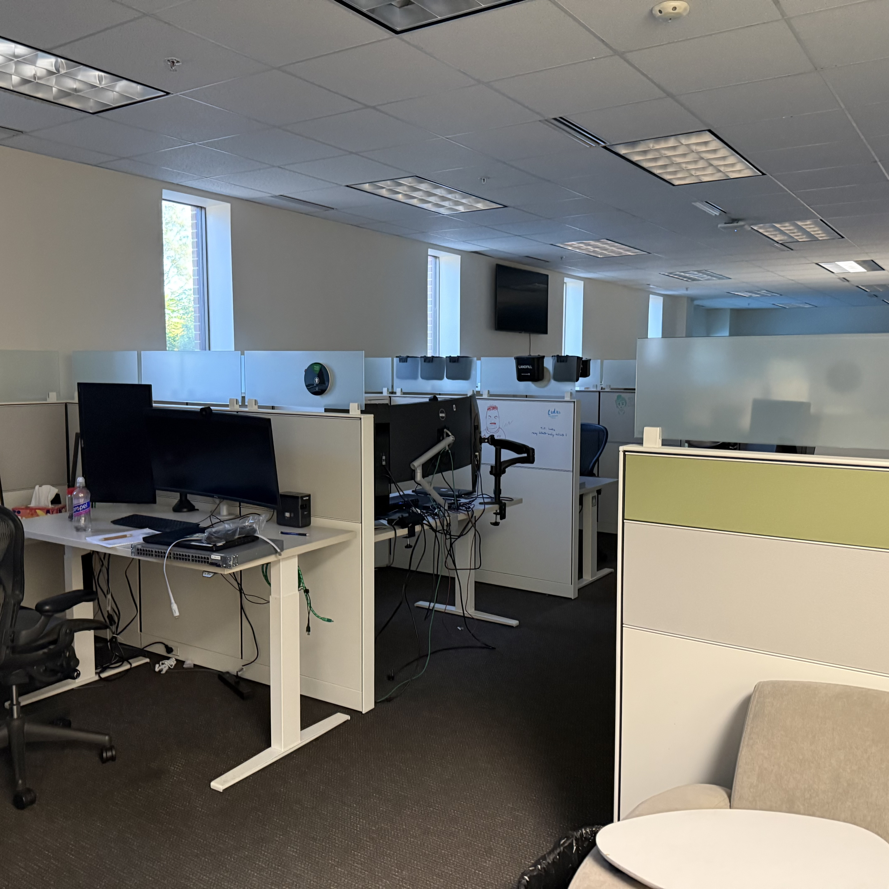

Wake Up! - Luke Sall
I usually wake up around 5:45am on my Tuesdays because I like to get ready for work. I show, get dressed, and leave my apartment by 6:30am for work.
In the Office! - Luke Sall
After arriving at the office, I drop my lunch off in the fridge and begin checking my tests that I left from the day before. Today I was testing an Access Point for a students room that was giving them trouble. I usually leave for class around 11:00am.
- Work
- School
- Back to Work
Lunch! - Luke Sall
I usually eat lunch on the way to class as I walk over. My lunch usually includes:
- Ham Sandwhich
- Ritz Crackers
Another Day in the Life - 9/26/2025
Time Management! - Luke Sall
At work it isn't unusual that I have to either drive out to a location or work on something in the office. Due to this, it is important that I am constantly doing homework outside of work to balance this. To ensure that I have time for this, I found that going to work on days that I don't have class end up letting me do homework on my days off and create a better schedule for me. Below is a table of how I manage my time througout the week.
Time Table
| Day | Hours | Time |
|---|---|---|
| Tuesday | 4 | Morning |
| Thursday | 9 | All Day |
| Friday | 9 | All Day |